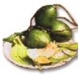
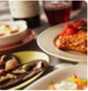
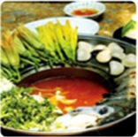
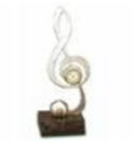

Tình yêu là gì? Là ta yêu một người mỗi ngày trong một năm. Mỗi năm trong một đời người ...
Trầu cau

Tình yêu là gì? Là ta yêu một người mỗi ngày trong một năm. Mỗi năm trong một đời người ...

Nói đến hạnh phúc gia đình chúng ta thường mô tả bằng những từ thật đẹp đẽ và được thể hiện qua những giá trị đạo đức đáng trân trọng

Cơ thể chúng ta cần nhiều chất dinh dưỡng từ nhiều nguồn lương thực khác nhau ...
Sức khỏe của chính bạn. Không hút thuốc lá tức là giảm thiểu đáng kể rủi ro mắc các bệnh ung thư
Các món ăn mới trong tuần - Chuyên mục dạy nấu ăn - Món ngon Hà Nội - Các món ăn dân dã ở miền Tây

Nắng sân trường - Mẹ yêu không nào - Ba bà đi bấn lợn con.
Bèo dạt mây trôi - Mười thương - Lý cây bông.
